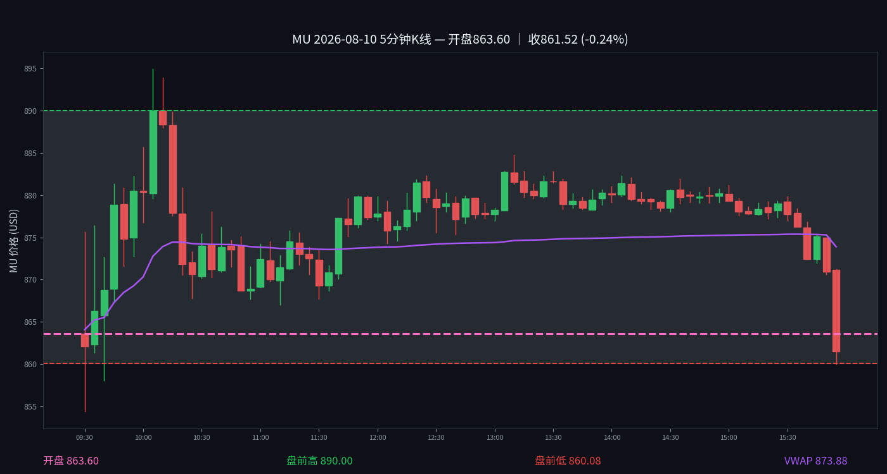

MU
2026-08-10 · 周一 · 日内报告
861.52 (-0.24%)

开盘 863.60 ｜ 最高 888.00 ｜ 最低 861.52 ｜ 收盘 861.52 (-0.24%)
盘前高 890.00 ｜ 盘前低 860.08
VWAP 873.88
注：本日无 heatmap 快照（数据已过期），无 flow 数据（YHS 仅保留近期）。K 线为 Databento 1 分钟聚合 5 分钟，VWAP 为真实成交量加权。
历史数据库：每日收盘后追加当日报告，历史日期永久保留。